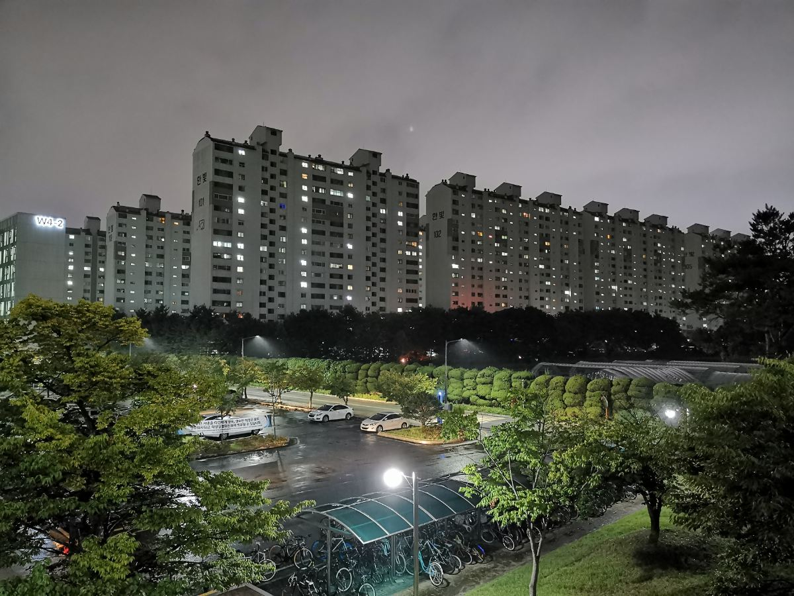

04 / ÖĞRENCİ DENEYİMİ
BÖLÜMÜNÜ
İLK GÜNDEN
SEÇMEK ZORUNDA
DEĞİLSİN.
KAIST’te birinci sınıfta farklı alanları tanıyıp sonra bölümüne karar verebilirsin.
1. YILTemel eğitim
Ortak dersler ve disiplinleri tanıma fırsatı.
→
2. DÖNEM SONUBölüm seçimi
İlgine ve hedeflerine göre alanını belirlersin.
Bölüm seçiminde kontenjan sınırı yok. Uluslararası öğrenci uygunluk şartları ayrıca aranır.